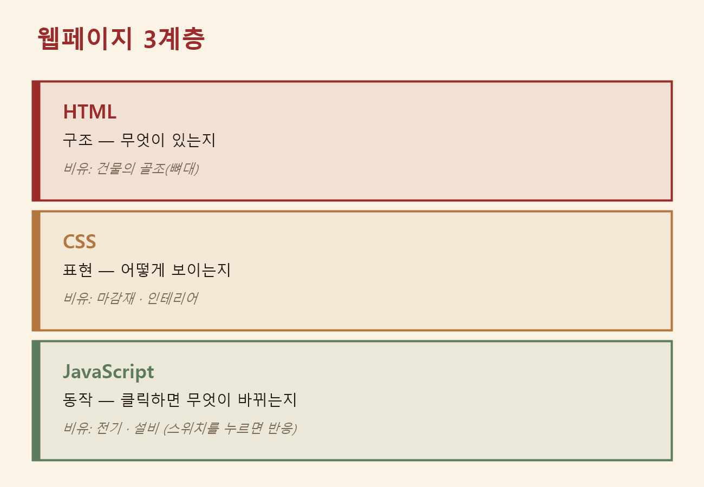

웹페이지를 이루는 세 겹 & 게임 만들기 (1) — 마크업·마크다운 차이, 그리고 HTML·CSS·JavaScript가 태어난 이유
2026. 7. 14.
지난 "바이브 코딩으로 웹 만들기" 시리즈를 마치고, 오늘부터 새 프로젝트가 시작됐어요. 이름은 "웹페이지를 이루는 세 겹 & 게임 만들기", 이번엔 총 5교시짜리예요. 수업 자료 첫 문장부터 뜨끔했어요 — "AI는 잘 만드는데, 내 말은 왜 안 통할까". 지난 시리즈에서 AI에게 화면을 고쳐달라고 했을 때 결과가 제 생각과 다르게 나온 적이 몇 번 있었는데, 오늘 그 이유를 알게 됐어요. 웹페이지는 사실 성격이 완전히 다른 세 겹으로 이루어져 있고, 그 세 겹은 각각 다른 시대에 다른 문제를 풀려고 태어났다는 거예요. 본격적으로 들어가기 전에, 수업과는 별도로 궁금했던 용어 하나부터 짚고 갈게요.
0교시 — 마크업(markup)과 마크다운(markdown), 뭐가 다를까
마크업(markup)이라는 말은 원래 출판·편집 업계에서 쓰던 말이에요. 옛날 편집자들은 손으로 쓴 원고를 인쇄소에 넘기기 전에, 빨간 펜으로 "여기는 굵게", "여기는 소제목", "이 문단은 들여쓰기"라고 원고 위에 직접 표시를 남겼어요. 이 "표시를 남기다(mark up)"라는 관행이 그대로 컴퓨터 용어가 됐어요. 컴퓨터의 마크업 언어는 이 빨간 펜 표시를 <태그>로 바꾼 것뿐이에요 — "이 글자는 제목이다", "이건 목록이다"처럼 글의 구조와 의미를 표시하는 언어를 통틀어 마크업 언어라고 불러요.
마크다운(Markdown)은 이 "마크업(markup)"이라는 단어를 가지고 만든 말장난이에요. 2004년 존 그루버(John Gruber)라는 사람이 만들었는데, "복잡한 HTML 태그를 손으로 다 치기 귀찮으니, #이나 ** 같은 간단한 기호로 대충 써놓으면 그걸 자동으로 HTML로 바꿔주자"는 경량 서식 문법이에요. 이름 자체가 "markup의 반대 방향(down)"이라는 뜻으로 지어졌어요 — 사람이 쓰는 수고는 아래로 내리고(down), 결과물은 다시 HTML로 올라간다(up)는 뜻이죠.
그래서 "마크다운은 마크업에 포함되는가?"라는 질문의 답은 네, 포함돼요. 정확히는 "경량 마크업 언어(lightweight markup language)"라는, 마크업의 하위 분류예요.
- 마크업 언어 (큰 범주 — 구조·서식을 표시하는 언어 전체)
- HTML (태그를 직접 쓰는, 원래 방식의 마크업 — 잠시 뒤에 이 이름의 진짜 사연이 나와요)
- 마크다운 (기호 몇 개로 간단히 쓰고, 나중에 HTML로 자동 변환되는 경량 마크업)
즉 HTML과 마크다운은 형제 관계가 아니라, 마크다운이 마크업이라는 우산 안에 들어가는 자식 관계예요. 이 블로그 글도 원래는 제가 마크다운으로 초안을 쓰고, 그걸 HTML 태그로 바꿔서 지금 이 화면처럼 보이게 만든 거예요.
세 겹이라는 밑그림
웹페이지는 겉보기엔 하나의 덩어리 같지만, 안을 들여다보면 성격이 다른 세 가지가 겹쳐 있어요. 화면에 무엇이 있는지(구조), 그게 어떻게 보이는지(표현), 사용자가 뭔가 했을 때 무엇이 바뀌는지(동작). 개발자들은 이 셋을 각각 HTML·CSS·JavaScript라는 이름으로 나눠서 다뤄요.

🤔 먼저 예측해보기 — AI가 만든 페이지에서 아래 문제가 생겼다면, 각각 어느 겹을 고쳐야 할까요? ① 안내 문구가 제 업무에서 쓰는 말과 맞지 않는다 ② 카드가 모바일에서 좁아져 글자가 겹친다 ③ 버튼을 눌러도 아무 반응이 없다. (답은 아래에서 각 겹을 설명하며 하나씩 맞춰볼게요.)
그런데 이 세 이름이 왜 하필 이렇게 따로 있는지가 궁금해졌어요. 한 사람이 어느 날 세트로 설계한 게 아니라, 웹이 자라는 30년 동안 서로 다른 시기에 서로 다른 문제를 풀려고 하나씩 태어났더라고요. 그 사연을 따라가 보니 오히려 "이 겹은 뭘 봐야 하는지"가 더 분명해졌어요.
HTML — 잃어버린 문서에서 시작된 이야기
1989년 유럽입자물리연구소(CERN)는 수천 명의 연구자가 저마다 다른 컴퓨터로 문서를 만드는 곳이었어요. 연구자가 떠나면 그 사람만 알던 자료 위치도 함께 사라졌고요. 여기서 일하던 팀 버너스리(Tim Berners-Lee)가 낸 제안은 단순했어요 — 문서 속 단어에서 관련된 다른 문서로 바로 건너뛸 수 있게 연결하자. 읽던 순서를 뛰어넘어(hyper) 이동하는 텍스트라서 이걸 하이퍼텍스트(hypertext)라고 불렀어요. 당시 상사는 제안서에 "막연하지만 흥미롭다"라고만 적었는데, 그 막연한 제안이 지금의 월드 와이드 웹이 됐어요. 1991년 공개된 세계 최초의 웹사이트는 지금도 info.cern.ch에서 그대로 볼 수 있는데, 배경도 색도 버튼도 없이 링크 달린 글자뿐이에요 — CSS도 JavaScript도 없던 웹의 원래 모습이죠.
HTML(HyperText Markup Language)이라는 이름은 여기서 그대로 나와요. "하이퍼텍스트를 적기 위한 마크업 언어" — 0교시에서 다룬 그 마크업이 맞아요. <h1>은 "이건 가장 큰 제목", <button>은 "이건 누르는 버튼"이라고 정보의 의미를 표시해요.
<!-- 태그로 의미를 붙입니다. h1 = 가장 큰 제목, button = 누르는 버튼 -->
<h1>내 첫 웹페이지</h1>
<button>시작하기</button>태생이 이렇다 보니 HTML을 검토하는 기준도 꾸밈이 아니라 정보예요. 예를 들어 병원 원무 안내 페이지를 AI에게 맡겼더니 '진료 안내', '예약', '오시는 길' 카드가 나왔다고 해봐요. 겉보기엔 번듯한데, 실제 창구에서 매일 수십 번 답하는 '진단서·제증명 발급' 안내가 빠져 있어요. 이 누락은 코딩 지식이 아니라 현장을 아는 눈에만 보여요. 그래서 이 겹의 최종 검토자는 결국 저예요. (아까 예측 문제의 ①번, "안내 문구가 업무 용어와 안 맞는다"는 바로 이 HTML 겹의 문제였어요.)
덧붙이자면, 1993년 CERN이 이 기술 전체를 로열티 없이 누구나 쓰게 공개하기로 결정했어요. 특허를 걸고 사용료를 받을 수도 있었는데 그러지 않았고, 그 덕분에 웹은 특정 회사의 제품이 아니라 모두의 기반이 됐어요. 제가 지금 HTML을 허락도 비용도 없이 쓰는 이유가 여기 있었어요.
CSS — "제목 색을 전부 바꿔주세요"의 악몽
초기 웹에는 디자인이라는 개념이 거의 없었어요. 꾸밈을 바꾸려면 본문 곳곳에 꾸밈 태그를 직접 끼워 넣어야 했는데, 문서가 수백 개인 사이트에서 "제목 색을 전부 바꿔주세요"라는 요청이 오면 담당자는 문서를 하나하나 다 열어 고쳐야 했어요. 내용과 꾸밈이 한 덩어리로 붙어 있었으니까요.
1994년, CERN에서 버너스리와 함께 일하던 호콘 비움 리(Håkon Wium Lie)가 인쇄 세계에서 힌트를 가져왔어요. 신문은 기사 원고와 지면의 조판 규칙을 따로 관리하잖아요 — 기사를 한 글자도 안 고치고 조판 규칙만 바꿔도 지면 전체의 인상이 달라지듯이, 웹도 꾸밈 규칙을 문서 밖의 스타일시트(style sheet)로 분리하자는 제안이었고, 1996년 표준이 됐어요.
이름의 "캐스케이딩(cascading)"은 "폭포처럼 층층이 흘러내린다"는 뜻이에요. 브라우저 기본 규칙, 사이트 공통 규칙, 페이지 개별 규칙처럼 여러 스타일이 동시에 겹칠 수 있는데, 그때 어느 쪽이 이기는지 우선순위가 폭포처럼 층을 이루며 정해져 있다는 뜻이 이름에 담겨 있어요. 그래서 CSS는 Cascading Style Sheets예요.
/* "h1 제목은 이렇게 보여라" — 파란색으로, 가운데 정렬로 */
h1 {
color: blue;
text-align: center;
}내용과 꾸밈을 분리한 게 실제로 얼마나 강력한지 보여준 실험도 있어요. 2003년 CSS Zen Garden이라는 사이트는 HTML 파일 하나를 고정해두고, 전 세계 디자이너들이 CSS 파일만 바꿔서 제출하게 했어요. 같은 HTML인데 어떤 CSS를 입히느냐에 따라 일본 정원이 되기도 하고 잡지 표지가 되기도 했어요 — 내용은 한 글자도 안 바뀌었는데 말이죠.
이 내력이 CSS의 검토 기준을 알려줘요. CSS가 담당하는 건 정보가 아니라 읽히는 방식이에요. 눈이 어디로 먼저 가는지, 모바일 폭에서 깨지는 구간은 없는지. (②번 예측 문제, "카드가 모바일에서 좁아져 글자가 겹친다"가 바로 이 CSS 겹의 문제였어요.)
실제로 말로 고칠 때는 화면의 버튼·카드·문단을 전부 상자(box) 하나로 생각하면 편해요. 상자는 안쪽부터 내용 → 안쪽 여백(padding) → 테두리(border) → 바깥쪽 여백(margin) 순으로 겹쳐 있어요. 지금은 이 네 단어를 외우기보다, 안쪽 여백은 padding, 바깥쪽 여백은 margin이라는 차이만 잡아도 충분해요. CSS 속성 이름을 몰라도 아래처럼 눈에 보이는 대로 말하면 AI가 알아서 번역해줘요.
| 이렇게 말해보세요 | AI가 살펴볼 CSS 힌트 |
|---|---|
| "카드와 카드 사이가 답답해요, 바깥 간격을 늘려줘" | margin |
| "버튼 글자가 테두리에 너무 붙어 있어, 안쪽 여백을 늘려줘" | padding |
| "카드에 연한 테두리와 둥근 모서리를 넣어줘" | border |
| "본문 내용을 가운데로 모아줘" | flex, margin: auto |
JavaScript — 열흘 만에 태어난 반응
1995년의 웹페이지는 잘 차려진 인쇄물에 가까웠어요. 정보는 담겨 있지만 눌러도 아무 일도 안 일어나는 종이였고, 입력한 값이 잘못됐는지도 서버까지 갔다 와야 알 수 있었어요. 당시 브라우저 시장을 이끌던 넷스케이프(Netscape)는 "페이지가 사용자 행동에 그 자리에서 반응하게 만들 언어"를 원했고, 브렌던 아이크(Brendan Eich)가 이 일을 열흘 만에 해냈어요. 이름은 Mocha → LiveScript → JavaScript로 바뀌었는데, 마지막 개명은 당시 최고 인기 언어였던 Java에 올라탄 마케팅이었어요. 두 언어는 이름만 닮았을 뿐 남남이라, "자바와 자바스크립트는 햄과 햄스터 관계"라는 농담이 아직도 개발자들 사이에 돌아다녀요.
이 언어의 첫 임무는 소박했어요 — 폼 검증, 즉 입력칸을 확인하는 일이었어요. 1995년 인터넷은 전화선 모뎀이라 페이지 하나 다시 받는 데 수십 초가 걸렸는데, 회원가입 폼에서 이메일을 잘못 쓰면 그 느린 왕복 끝에 "다시 입력하세요"가 돌아왔어요. 제출 버튼을 누르기 전에 브라우저가 그 자리에서 "이메일 형식이 아닙니다"라고 말해주는 것 — 그게 JavaScript가 세상에 처음 쓸모를 증명한 순간이었어요.
// 버튼을 누르면(click) 인사말 창을 띄웁니다
button.addEventListener('click', () => {
alert('안녕하세요!');
});JavaScript가 맡는 건 클릭·입력·필터·토글처럼 시간에 따라 변하는 것들이에요. (③번 예측 문제, "버튼을 눌러도 반응이 없다"가 바로 이 JavaScript 겹의 문제였어요.) 이 작은 언어가 웹의 주인공이 된 결정적 장면은 10년 뒤에 왔어요. 2005년 구글 지도가 나왔을 때, 사람들은 지도를 마우스로 잡아 끌었어요. 그때까지 웹 지도는 화살표를 누르고 페이지 전체가 다시 로드되길 기다리는 물건이었는데, 구글 지도는 끄는 동안에도 새 지도 조각을 뒤에서 계속 받아와 이어 붙였어요. 페이지를 새로 고치지 않고 서버와 데이터를 주고받는 이 기법에는 곧 AJAX라는 이름이 붙었고, 웹페이지가 '문서'에서 '애플리케이션'으로 넘어가는 분기점이 됐어요. 지도를 끄는 손을 따라가면서 동시에 데이터를 받아오는 게 어떻게 가능한지는, 다음 교시에서 더 다뤄볼 궁금증으로 남겨둘게요.
오늘의 CS 교양 — 세 겹은 사실 하나의 원칙이었다
내용·표현·동작을 나누는 발상은 웹만의 것이 아니더라고요. 컴퓨터 과학자 에츠허르 데이크스트라(Edsger W. Dijkstra)는 1974년 글에서, 복잡한 문제를 다룰 때 한 번에 한 측면에만 집중하고 나머지는 잠시 접어두는 태도를 관심사의 분리(separation of concerns)라고 불렀어요. 웹의 세 겹은 이 원칙이 화면 설계에 적용된 결과였던 거예요. 태어난 이유부터 검토 기준까지 정리하면 이래요.
| 겹 | 태어난 문제 | AI에게 이렇게 말해보세요 | 결과 판단 질문 |
|---|---|---|---|
| HTML | 흩어진 문서를 의미 있게 연결하기 | "제목, 안내 카드, 버튼을 의미에 맞게 배치해줘" | 필요한 정보와 업무 용어가 빠지지 않았는가 |
| CSS | 내용과 꾸밈이 붙어 있어 수정이 번지는 문제 | "모바일에서도 읽히게 간격, 색, 글자 크기를 조정해줘" | 눈이 어디로 가는지, 깨지는 구간은 없는가 |
| JavaScript | 눌러도 반응하지 않는 정적인 문서 | "버튼을 누르면 화면의 내용이 바뀌게 해줘" | 클릭·입력·상태 변화가 기대대로 일어나는가 |
겹을 나눠서 말하는 게 왜 중요한지 확인해보려고, 이런 비교 문제를 스스로 풀어봤어요. 모바일에서 버튼 두 개가 겹치는 문제를 발견했을 때, 다음 중 AI가 작업하기 더 좋은 요청은 어느 쪽일까요?
A. "버튼이 겹치니까
.nav-button에flex-wrap: wrap이랑min-width: 120px를 줘."
B. "모바일에서 버튼 두 개가 겹쳐서 누르기 어려워. 버튼 안 글자는 그대로 두고, 버튼이 줄바꿈되게 고쳐줘."
답은 B예요. A처럼 클래스 이름과 속성값을 콕 집어 말하면, 실제 코드가 그 클래스를 안 쓰거나 다른 방식으로 짜여 있을 때 오히려 안 통해요. B는 눈에 보이는 문제(버튼이 겹친다)와 지켜야 할 조건(글자는 그대로)만 설명했으니, AI가 실제 코드 구조에 맞는 방법을 스스로 찾을 수 있고, 저도 "겹치지 않게 됐는가"만 보면 결과를 판단할 수 있어요.
오늘 배운 건 사실 절반이었다 — 프론트엔드와 백엔드
오늘 다룬 HTML·CSS·JavaScript는 전부 사용자가 브라우저에서 직접 만나는 영역이라, 프론트엔드(frontend)라고 불러요. 그런데 웹서비스에는 보이지 않는 쪽도 있어요. 신청서를 저장하고, 로그인한 사람만 자기 기록을 보게 하고, 여러 사람이 같은 데이터를 봐도 기준이 안 흔들리게 관리하는 영역, 백엔드(backend)예요. 이 시리즈의 건물 비유를 그대로 이어가면, 프론트엔드가 골조·인테리어·전기설비처럼 눈에 보이는 부분이라면, 백엔드는 건물 지하에 숨어서 전기·수도를 실제로 공급하는 배관·전력망 같은 거예요. 겉에서 보이진 않지만, 이게 없으면 스위치를 눌러도 정말로 불이 켜지진 않아요.
오늘은 이 프론트엔드의 세 겹만 먼저 익혔고, 백엔드와 데이터 저장은 뒤 교시에서 다룰 예정이에요. AI에게 지시할 때도 이 구분이 중요해요 — "업무 카드가 모바일에서 한 열로 보이게 해줘"는 프론트엔드 요청이고, "상담 기록을 저장하고 작성자만 수정하게 해줘"는 백엔드 요청이에요. 이 둘을 섞어서 던지면, 화면은 만들어졌는데 저장이 빠지거나 저장 코드는 있는데 눌러볼 화면이 없는 결과가 나올 수 있어요.
오늘의 핵심은 결국 이거였어요 — 웹페이지의 구조(HTML)·표현(CSS)·동작(JS)은 각자 다른 시대에 다른 문제를 풀려고 태어났고, 그래서 맡은 일과 검토 기준도 다르다. "AI는 잘 만드는데 내 말은 왜 안 통할까"의 답이 여기 있었어요 — 저는 지금까지 "여기 좀 예쁘게 해줘"처럼 세 겹을 뭉뚱그려 말했는데, 그러면 AI가 어느 겹을 고쳐야 할지 스스로 추측해야 해요. 어느 겹의 문제인지 제가 먼저 짚어서 말하면, AI가 추측할 필요가 없어져요.
HTML과 CSS의 관계는 사실 지난 시리즈 4교시에서도 "골조 vs 인테리어" 비유로 한 번 다뤘던 내용이에요. 그 글도 함께 보면 좋아요.
"웹페이지를 이루는 세 겹 & 게임 만들기" 시리즈
(1) 마크업·마크다운 차이, 그리고 HTML·CSS·JavaScript가 태어난 이유 (이 글)
※ 앞으로 이어질 교시는 발행되는 대로 이 목록에 추가할게요.